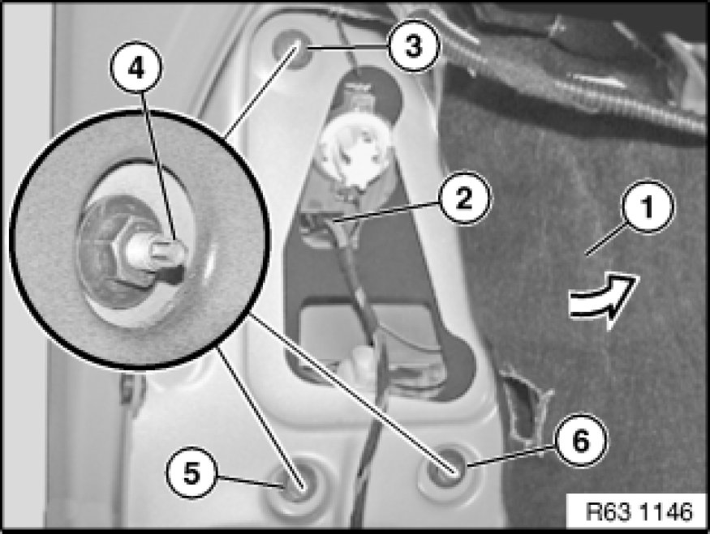

Removing and Installing/Replacing Left or Right Rear Light (On Side Panel) (From 09/06)
63 21 180 - Removing and installing/replacing left or right rear light (on side panel) (from 09/06)

Important!
Read and comply with notes on protection against electrostatic damage (ESD protection) 61 35 ... Notes on ESD Protection (Electro Static Discharge).

Necessary preliminary tasks:
- Remove flap in luggage compartment panel Removing and Installing/Replacing Flap In Luggage Compartment Trim, Left or Right

Fold back side trim panel (1) in direction of arrow.
Disconnect plug connection (2).
Release nuts (3,5,6), gripping the threaded pin (4) with a suitable tool in so doing. Tightening torque 63 21 1AZ Rear Light Unit.
Remove rear light in outwards direction from side panel.
Remove socket housing Replacing a Socket Housing for Left or Right Rear Light (From 09/06).
Installation:
- Observe tightening sequence:
1. Tighten nut (3)
2. Tighten nut (5)
3. Tighten nut (6)
- Make sure sealing washers are fitted on threaded pins (4) between rear light and side panel
- Make sure sealing frame for rear light Replacing Sealing Frame for Left or Right Rear Light (Side Panel) (From 09/06) is correctly positioned on rear light
- Make sure gap (outer) is uniform all round between rear light and side panel